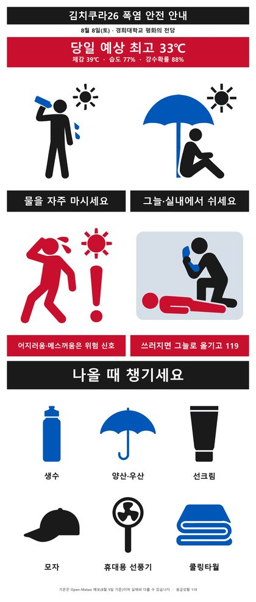

모르포니카 & 센고쿠 유노
내한 확정!
세트리스트
2026.08.08 (토) 14:00~20:00 · 경희대학교 평화의전당 — 그날 그 순서 그대로.
※ 스포티파이·유튜브 뮤직은 갤러리 제작 플레이리스트 글로 연결됩니다.
DJ和 → ROOKiEZ is PUNK'D → MADKID → DJ 千石ユノ → Morfonica → 765PRO ALLSTARS → 밀리언스타즈 → 오오하시 아야카 → イキヅライブ！ → ChouCho → KOTOKO
1DJ和 오프닝 DJ셋미확인
아직 공개된 세트리스트 자료가 없습니다. 갤 후기에서 언급된 선곡 단편만 남깁니다(순서·전체 여부 불명).
- HOT LIMITT.M.Revolution
- 愛♥スクリ～ム！AiScReam
- 回レ！雪月花歌組雪月花
- IRIS OUT요네즈 켄시
- PretenderOfficial髭男dism
- 青い珊瑚礁마츠다 세이코
2ROOKiEZ is PUNK'D6곡
- In My World
- リマインド
- Song for...
- リアライズ
- リクライム
- コンプリケーション
3MADKID6곡
- Bring Back
- FAITH
- Mad Pulse
- 第ゼロ感커버곡
- Fight it out
- RISE
4DJ 千石ユノ 센고쿠 유노 · DJ셋21곡
- ビッグマウス
- TearJarker
- 顔
- KiLLKiSSAve Mujica
- にこ×にこ=ハイパースマイルパワー！
- きゅ〜まい＊flower
- 燦々
- STAR BEAT! ～ホシノコドウ～Poppin'Party
- ティアドロップスPoppin'Party
- キズナミュージック♪Poppin'Party
- EXPOSE 'Burn out!!!'RAISE A SUILEN
- HELL? or HELL!RAISE A SUILEN
- Ringing BloomRoselia
- ZEAL of proudRoselia
- 焚音打RAISE A SUILEN
- 碧天伴走RAISE A SUILEN
- 迷星叫RAISE A SUILEN
- コミュ着火Fire!ハロー、ハッピーワールド！
- Face the Next
- 真夜中遊園地
- これはぼくたちの生存のあらすじMyGO!!!!!
5Morfonica6곡
- flame of hope
- 寄る辺のSunny,Sunny의지하는 Sunny, Sunny
- メランコリックララバイ멜랑콜릭 럴러바이
- 両翼のBrilliance양날개의 Brilliance
- Resonant Strings
- Daylight -デイライト-데이라이트
setlist.fm 등재분과 곡순 완전 일치(교차검증 완료).
6765PRO ALLSTARS6곡
- THE IDOLM@STER
- 乙女よ大志を抱け!!아마미 하루카 솔로
- Day of the future호시이 미키 솔로
- 目が逢う瞬間키사라기 치하야 솔로
- Fate of the World
- READY!!
7밀리언스타즈 MILLIONSTARS9곡
- Dreaming!
- ロケットスター☆이부키 츠바사 솔로 · 2~3 메들리
- 夢色トレイン하코자키 세리카 솔로 · 2~3 메들리
- RED ZONE키타카미 레이카 + 바바 코노미
- Only One Second타카야마 사요코 솔로 · 5~7 메들리
- サマ☆トリ ～Summer trip～키타카미 레이카 솔로 · 5~7 메들리
- 水中キャンディ바바 코노미 솔로 · 5~7 메들리
- Dance in the Light츠바사 + 세리카 + 사요코
- Crossing!
8오오하시 아야카 大橋彩香5곡
- YES!!
- ENERGY☆SMILE
- バカだなぁ
- Please, Please!
- ワガママMIRROR HEART
9イキヅライブ！ 이키즈라이부!8곡
- What is my LIFE?
- 浅草Guilty Girlの歌타카하시 폴카 솔로
- キミは夜のポラリス코노하나 오로라 솔로
- 恋のワンタイムパスワード쵸후 노리코 솔로
- Little Green委員会야마다 미노리 솔로
- イキタクナイevery day사사키 시온 솔로
- Dou-Da? DOING!
- REGAIN AGAIN LLLLOVE
10ChouCho7곡
- カワルミライ
- 優しさの理由
- DreamRiser
- 灰色のサーガ
- なないろのたね
- starlog
- kaleidoscope
11KOTOKO6곡
- Shooting Star
- INTERNET OVERDOSE
- 七転八起☆至上主義!
- →unfinished→
- Re-sublimity
- Light My Fire
출처 — 밴드·성우 전체 세트리: 방갤 6397769 (원문: 밀리시타 성우 갤러리) / 센고쿠 유노 DJ셋: 방갤 6397055 (X @ha21_crom) / Morfonica 교차검증: setlist.fm. DJ和 선곡 단편은 방갤 댓글 제보 기준(순서 불명). 오프닝 DJ和 세트리스트가 공개되면 갱신합니다. (정리: 2026-08-09)
공연 당일, 매우 덥습니다
오시기 전 30초만 확인해 주세요.
- 물을 자주 마시고, 그늘·실내에서 자주 쉬세요.
- 어지러움·메스꺼움은 열탈진의 위험 신호입니다.
- 쓰러진 사람은 그늘로 옮기고 즉시 119에 신고하세요.
- 챙길 것 — 생수, 양산·우산, 선크림, 모자, 휴대용 선풍기, 쿨링타월
- 물 반입 — 공연장 내에는 500mL 이하 뚜껑 있는 생수에 한해 여러 병 반입 가능합니다. (주최 공식)
- 두통·어지럼증·메스꺼움·과도한 발한이 오면 즉시 시원한 곳으로 이동한 뒤 가까운 스태프에게 알리세요.
- 야외에서 장시간 대기하지 말고, 가급적 입장 시간(13:00)에 맞춰 오세요.
※ 기온은 8월 7일 기준 예보이며 실제와 다를 수 있습니다. 물 반입·운영 시간은 8월 7일 주최 측 당일 안내 문자 기준입니다.
{kind=link}

크게 보기김치쿠라란?
About KIMCHIKURA
2016년부터 운영해온 한국의 애니송 DJ 클럽 이벤트입니다. DJ가 직접 애니송·J-POP을 믹싱하며 팬들과 함께 즐기는 파티형 행사로, 2018년에는 한국 최초로 일본 성우 내한 이벤트를 개최하며 차별성을 확립했습니다.
김치쿠라가 주최하는 아티스트 라이브 중심 대형 페스티벌입니다. Vol.1은 DJ 공연 위주였으나 Vol.2부터 라이브 병행, Vol.3부터는 일본 애니송 아티스트 초청 중심으로 전환되었고, Vol.4는 DJ 없이 아티스트만으로 구성된 단독 콘서트 페스티벌로 진행되었습니다. 2026년 Vol.5는 역대 최대 규모인 경희대학교 평화의전당(4,250석)에서 개최됩니다.
당일 일정
2026년 8월 8일 (토) · 주최 측 당일 안내 문자(08-07) 반영
- 09:00 ~ 11:00화환 도착 지정 시간
- 10:00 ~ 21:00화환 진열 (평화의전당 외부 광장)
- 11:00 ~티켓 교환 · MD 판매 시작 (공식 확정)
- 13:00 ~공연장 입장 시작 (공식 확정)
- 14:00 ~ 20:00공연 (아티스트별 타임테이블 미발표)
- 16:00까지티켓 교환 마감 — 공연 시작 후 2시간까지만 운영
- 21:00 ~ 22:00화환 철거 완료
※ 폭염이 예상되므로 야외에서 장시간 대기하지 말고 가급적 입장 시간에 맞춰 방문해 달라는 것이 주최 측 당부입니다. 아티스트별 출연 순서(타임테이블)는 아직 발표되지 않았습니다.
공연 중·후 MD 판매는? (작년 기준 추정)
시작 시각(11:00 MD·13:00 입장)은 공식 확정됐지만, 공연 중·후 운영은 아직 공지되지 않았습니다. 작년 VOL.4의 실제 운영은 아래와 같았습니다.
- 공연 시작MD 굿즈 판매 일시 중지
- 공연 중인터미션 약 20분 — MD 굿즈 판매 재개
- 공연 종료 후MD 굿즈 판매 약 30분간 재개
- 재입장팔찌 확인으로 가능했음
※ 이 항목은 2025년 VOL.4 기준 추정이며 이번 공연의 공식 발표가 아닙니다.